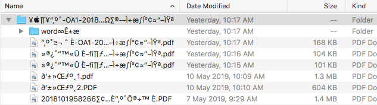

解决解压 zip 压缩包中的中文文字乱码
1 问题
别人给发的 Windows 下压缩的 zip 包在 Mac 下解压出来的往往是乱码的，大概如下图所示

2 解决方法
分析可能是 Windows 默认使用 GBK 编码，到 Mac 下不认，所以安装 unar 工具，使用 GBK 方式 解压缩包就好
# 安装 unar 工具 brew install unar # 解压命令 unar -e GBK data.zip
3 更多用法
当然 unar 也可以在 Ubuntu 上安装
# Linux 安装 sudo apt-get install unar
列出压缩包内容
lsar data.zip
指定解压结果保存的位置
unar document.zip -o /home/dir/
指定解压密码
unar -p 123456 document.zip
解决 linux 解压压缩包中文文件名乱码问题
lsar document.zip ###若发现乱码，可指定压缩包文件名使用的编码格式## lsar -e GB18030 document.zip ###若能正常列出文件名，可解压### unar -e GB18030 document.zip